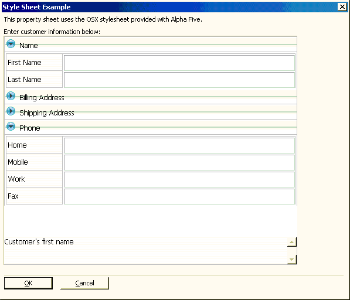

Different Style Sheets
This topic describes the process of creating a property sheet styled with a Cascading Style Sheet.

This property sheet was created with Action Scripting. See Property-Sheet Style Xdialog.
The style sheet was applied on the Propsheet Settings tab of the Property Sheet Builder.
The designer selected "WebForm Style" in the Propsheet > Type list.
The designer selected "Osx" in the Propsheet > WebForm Style list.
See Also
Limitations
Desktop applications only.